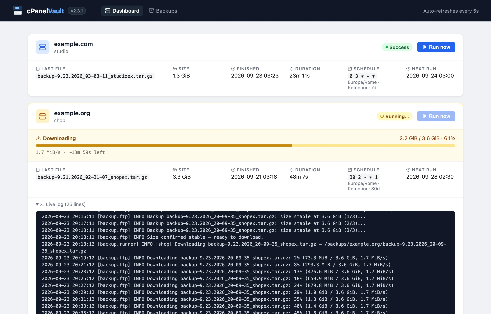
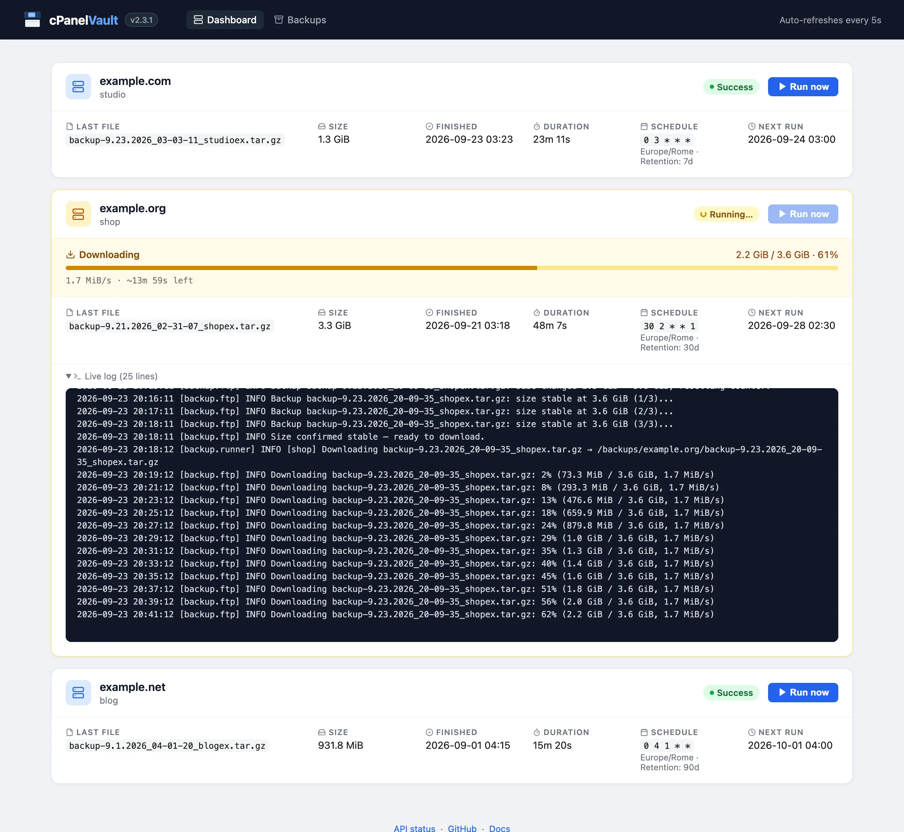
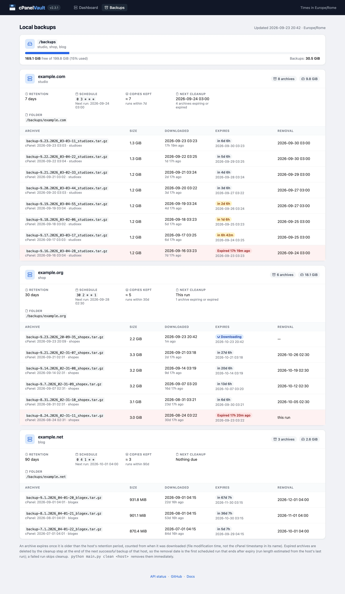
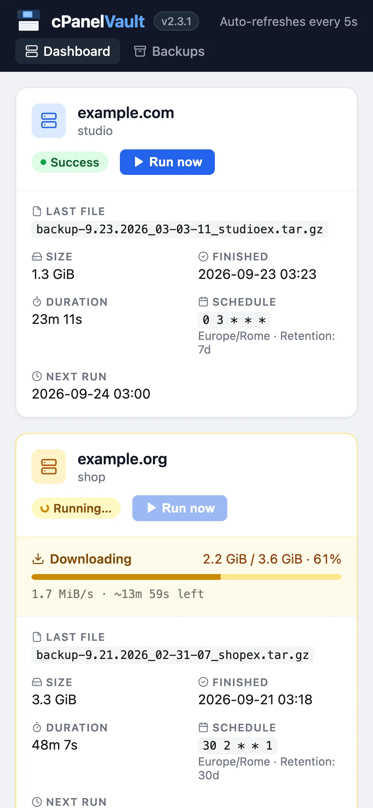

cPanelVault requests full backups of your cPanel accounts, downloads them over FTP with resume, and keeps a rotating local archive — with a live web UI, per-host scheduling and notifications.

A focused tool that does one thing well: get full cPanel backups off the server and keep them safe on storage you control.
See every host at a glance: current phase, download progress with speed and ETA, the live log of the run, next scheduled run and one-click manual backups.
Browse the local archives of each host with size, download date, expiry and the run that will remove them, plus free space on the backup volume.
Polls the FTP until the archive stops growing across several checks before downloading — no partial files, no placeholders.
Resumable downloads, socket timeouts, a free-space check before each download, and automatic retries for backup requests and remote deletes.
A per-account lock stops the scheduler, the web UI and the CLI from backing up the same cPanel account twice at the same time.
Archives older than a per-host number of days are removed after each successful run, so storage never grows unbounded.
Back up any number of cPanel accounts from one instance, each with its own cron schedule, retention and credentials.
Results with the run log via Telegram, SMTP or Resend — enable one channel or all of them.
Multi-arch images (amd64, arm64) on Docker Hub and GHCR, with a healthcheck and volumes for backups and state.
Every run is visible from the browser: no need to tail container logs to know where a backup is.

Dashboard. Status, last archive, duration, schedule and next run for each host. A running backup shows its phase (checking FTP, waiting for cPanel, stability check, downloading, retention), progress with speed and ETA, and the live log.

Backups page. Every archive on the backup volume, grouped by host: size, cPanel timestamp, download date, expiry and the scheduled run that will remove it. Expired and soon-to-expire archives are highlighted. (Scroll inside the image.)

Mobile. The web UI adapts to small screens, so you can check a run from your phone.
At the scheduled time (or when you click Run now) cPanelVault runs these steps for each host.
If a backup from a previous session is still on the server, it's downloaded and removed first, so nothing is lost or left behind.
cPanelVault calls the cPanel UAPI (fullbackup_to_homedir). On connectivity errors the request is retried after 10 and 30 minutes.
It polls the FTP and waits until the file size is identical across several consecutive checks — proof that cPanel has finished writing.
After checking free disk space, the archive is downloaded with automatic resume, then deleted from the FTP server. The remote copy is removed only after the local download succeeds.
Local archives older than the host's retention period are deleted, the status is saved for the dashboard, and a notification with the run log is sent.
All you need is Docker with Compose. Official images are published for every release:
# Get the compose file and a sample config mkdir cpanelvault && cd cpanelvault RAW=https://raw.githubusercontent.com/gioxx/cPanelVault/main curl -LO $RAW/docker-compose.yml curl -Lo ftp_config.json $RAW/ftp_config_sample.json # Add your hosts and credentials nano ftp_config.json # Start docker compose up -d
The web UI is available at http://localhost:8080. Set TZ in docker-compose.yml to your timezone: cron schedules use it.
# docker-compose.yml volumes: - ./ftp_config.json:/app/ftp_config.json:ro - "/mnt/my-disk/cPanel Backups:/backups" - data:/data
Host path on the left, container path on the right. Quote the entry if the path contains spaces, and keep "backup_local_dest_folder": "/backups" in the config.
docker compose pull && docker compose up -d
Pin a release (e.g. gfsolone/cpanelvault:2.3.1) instead of latest to upgrade on your own schedule.
Everything below is also in the README (italiano).
All settings live in one JSON file, ftp_config.json (mounted read-only at /app/ftp_config.json in Docker). Each top-level key other than notifications is a host; the key (cpanel1, website, …) is the name used in the web UI, the CLI and the API.
{
"notifications": { ... },
"cpanel1": {
"host": "ftp.example.com",
"ftp_username": "backup@example.com",
"ftp_password": "your-ftp-password",
"cpanel_username": "exampleuser",
"cpanel_api_token": "YOUR_TOKEN",
"backup_local_dest_folder": "/backups",
"mail_to_notify": "you@example.com",
"time_to_wait": 60,
"retention_days": 30,
"schedule": "0 2 * * *"
}
}
Archives are stored as <backup_local_dest_folder>/<domain>/backup-*.tar.gz, where the domain is host without the ftp. prefix.
| Field | Default | Description |
|---|---|---|
host | — | FTP hostname, with or without the ftp. prefix. The cPanel API is called on the same name without the prefix (port 2083). |
ftp_username | — | FTP user that can read the account's home directory. |
ftp_password | — | FTP password. |
cpanel_username | — | cPanel account username. |
cpanel_api_token | — | cPanel API token (see below). |
backup_local_dest_folder | — | Local root folder for archives: /backups in Docker. |
mail_to_notify | — | Address cPanel emails when the backup is ready. |
time_to_wait | 60 | Seconds between size-stability checks while cPanel writes the archive. |
retention_days | 30 | How many days local archives are kept, counted from their download. |
schedule | — | Cron expression (5 fields) in the TZ timezone. Numeric weekdays are supported (0 and 7 = Sunday). Omit for manual-only hosts. |
request_after_download | true | When a leftover backup is found on the FTP server and downloaded, request a fresh one right after, so the run still produces a current archive. |
cpanelvault).cpanel_api_token.| Variable | Default | Description |
|---|---|---|
TZ | UTC | Timezone for cron schedules and for the times shown in the web UI. |
CONFIG_FILE | /app/ftp_config.json | Config file used by the web UI and scheduler. The CLI uses --config instead. |
STATUS_FILE | /data/status.json | Last-run status of every host, read by the dashboard. |
LOCK_DIR | locks/ next to STATUS_FILE | Lock files that prevent concurrent backups of the same account. |
QUIET_ACCESS_LOG | true | Hides successful dashboard refreshes, /api/status and static requests from the access log. Set to false to log everything. |
Defaults shown are the ones set in the Docker image; outside Docker, CONFIG_FILE and STATUS_FILE default to ftp_config.json and status.json in the working directory.
Channels are configured in the notifications key of ftp_config.json. Every enabled channel receives the result of each run, including its log.
Create a bot with @BotFather. For chat_id use your user ID (@userinfobot) or a channel/group ID prefixed with -100.
"telegram": { "enabled": true, "bot_token": "123456789:AABBcc...", "chat_id": "-100123456789" }
Any SMTP server. Use port: 587 with use_ssl: false for STARTTLS, or port: 465 with use_ssl: true for implicit TLS. For Gmail, use an App Password.
"smtp": { "enabled": true, "host": "smtp.gmail.com", "port": 587, "use_ssl": false, "username": "you@gmail.com", "password": "app-password", "from": "cPanelVault <you@gmail.com>", "to": "recipient@example.com" }
Sign up at resend.com, verify your sender domain and create an API key.
"resend": { "enabled": true, "api_key": "re_xxxx...", "from": "cPanelVault <backup@yourdomain.com>", "to": "recipient@example.com" }
Create the config on the Docker host first (e.g. /opt/cpanelvault/ftp_config.json), then add a stack (Stacks → Add stack → Web editor):
services: cpanelvault: image: gfsolone/cpanelvault:latest ports: - "8080:8080" volumes: - /opt/cpanelvault/ftp_config.json:/app/ftp_config.json:ro - cpanelvault_backups:/backups - cpanelvault_data:/data environment: TZ: Europe/Rome restart: unless-stopped volumes: cpanelvault_backups: cpanelvault_data:
To upgrade: Stacks → cpanelvault → Update the stack with Re-pull image enabled.
The same image (or a local pip install -r requirements.txt) provides a command-line interface. Inside the container, prefix commands with docker compose exec cpanelvault so they share the lock and status with the web UI.
# Back up one host, or all of them sequentially python main.py backup cpanel1 python main.py backup --all # Remove expired archives (preview first) python main.py clean cpanel1 --dry-run python main.py clean --all # Web UI + scheduler (what the container runs) python main.py serve --port 8080 # Use a different config file python main.py --config /path/to/config.json backup --all
backup exits with code 1 if any host fails or is skipped, so it can be used from cron or scripts.
| Method | Path | Description |
|---|---|---|
GET | / | Dashboard (HTML) |
GET | /backups | Backups page (HTML) |
GET | /api/status | Last-run status of every host (JSON), also used by the healthcheck |
GET | /api/hosts | Configured hosts (JSON) |
GET | /api/backups | Local archives, retention and volume usage (JSON) |
POST | /backup/<name> | Start a backup of one host in the background |
curl -X POST http://localhost:8080/backup/cpanel1 curl http://localhost:8080/api/status
An archive expires when it's older than the host's retention_days, counted from its download (file modification time). Expired archives are removed at the end of the next successful backup of that host — a failed run never deletes anything. The Backups page shows the run that will remove each archive; python main.py clean <host> removes them immediately.
No. Only one backup per cPanel account runs at a time, whether it's started by the scheduler, the Run now button or the CLI. The lock is keyed on the FTP host (case, ftp. prefix and trailing dot ignored) plus cpanel_username, so two config entries pointing at the same account are serialized too: the entry actually running shows Running…, the others show Busy, and a second run is skipped with a warning.
At the next start, a backup left in the "running" state is marked as interrupted. Partially downloaded archives are resumed by the next run.
The cPanel backup request is retried after 10 and 30 minutes on connectivity errors; FTP downloads retry every 10 seconds and resume where they stopped; remote deletes are retried up to 5 times. If the backup volume doesn't have enough free space, the download is aborted up front with a clear error.
On stdout (docker compose logs -f), in the dashboard's live log for each run, and in notifications. Routine dashboard refreshes and healthchecks are kept out of the access log unless QUIET_ACCESS_LOG=false.